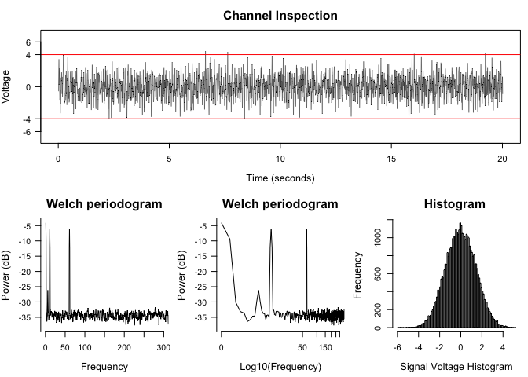
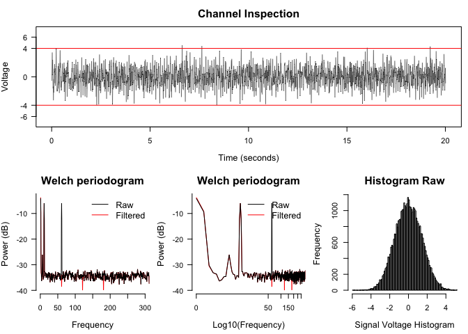
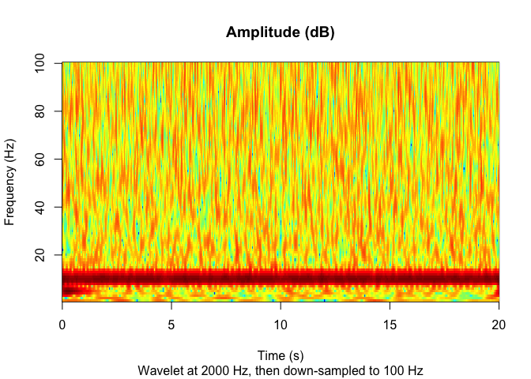
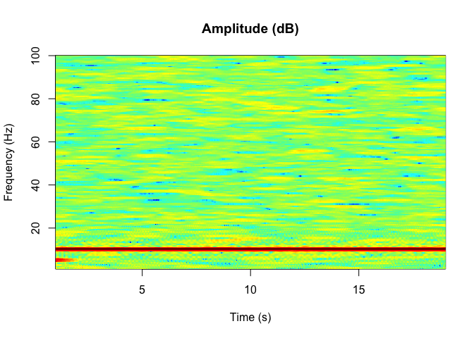

The goal of ravetools is to provide memory-efficient signal processing toolbox for intracranial-EEG analyses. Highlighted features include:
-
Notch filter(remove electric line noise) -
Welch Periodogram(averaged power over frequencies) -
Wavelet(frequency-time decomposition)
Installation
The package is available on CRAN. To install the compiled version, simply run:
install.packages("ravetools")If you want to participate in the development of ravetools. Please make sure you have FFTW3 installed. On Windows, install Rtools and add it to system path; on MacOS, install HomeBrew in your shell terminals, and run brew install pkg-config fftw; on Ubuntu-Linux, run bash command sudo apt-get install libfftw3-dev. Please search online about how to install FFTW3 on other operating systems. Once FFTW3 is installed, execute the following R command.
#!/usr/bin/env R
# install.packages("remotes")
remotes::install_github("dipterix/ravetools")
iEEG preprocess pipeline
This is a basic example which shows you how to preprocess an iEEG signal. The goal here is to:
- Plot diagnostic graphs to inspect channels
- Apply Notch filters to remove electric line noise
- Frequency-time decomposition and show the power densities
* Channel referencing is not included
1. Generate toy examples:
library(ravetools)
# Generate 20 second data at 2000 Hz
time <- seq(0, 20, by = 1 / 2000)
signal <- sin( 120 * pi * time) +
sin(time * 20*pi) +
exp(-time^2) *
cos(time * 10*pi) +
rnorm(length(time))
diagnose_channel(signal, srate = 2000)
2. Apply Notch filters and inspect Periodograms
## ------- Notch filter --------
signal2 <- notch_filter(signal, sample_rate = 2000)
diagnose_channel(signal, signal2, srate = 2000,
name = c("Raw", "Filtered"))
3. Frequency-time decomposition
Current version of ravetools provides two approaches: Wavelet and Multi-taper. Wavelet uses the Morlet wavelet and obtains both amplitude and phase data, while Multi-taper does not generate phase data. However, the amplitude obtained from Multi-taper is smoother than Wavelet.
Using Wavelet:
## ---------- Wavelet -----------
coef <- morlet_wavelet(
signal2, freqs = seq(1, 100),
srate = 2000, wave_num = c(2, 15))
amplitude <- 10 * log10(Mod(coef[]))
# For each frequency, decimate to 100 Hz
downsample_amp <- apply(amplitude, 2, decimate, q = 20)
downsample_time <- decimate(time, q = 20)
par(mfrow = c(1,1))
image(
z = downsample_amp,
x = downsample_time,
y = 1:100,
xlab = "Time (s)",
ylab = "Frequency (Hz)",
main = "Amplitude (dB)",
sub = "Wavelet at 2000 Hz, then down-sampled to 100 Hz",
col = matlab_palette()
)
Multi-taper
Alternatively you can use Multi-tapers to obtain amplitude data. The algorithm is modified from source code here. Please credit them as well if you adopt this approach.
## ---------- Multitaper -----------
res <- multitaper(
data = signal2,
fs = 2000,
frequency_range = c(1, 100),
time_bandwidth = 1.5,
window_params = c(2, 0.01)
)
par(mfrow = c(1,1))
image(
x = res$time,
y = res$frequency,
z = 10 * log10(res$spec),
xlab = "Time (s)",
ylab = 'Frequency (Hz)',
col = matlab_palette(),
main = "Amplitude (dB)"
)